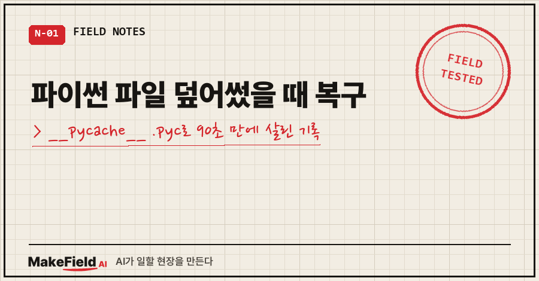
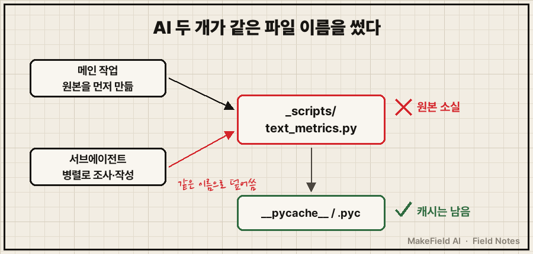
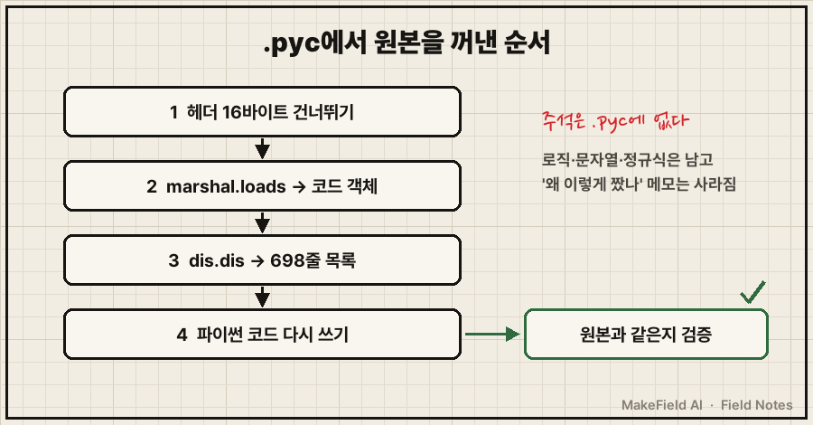
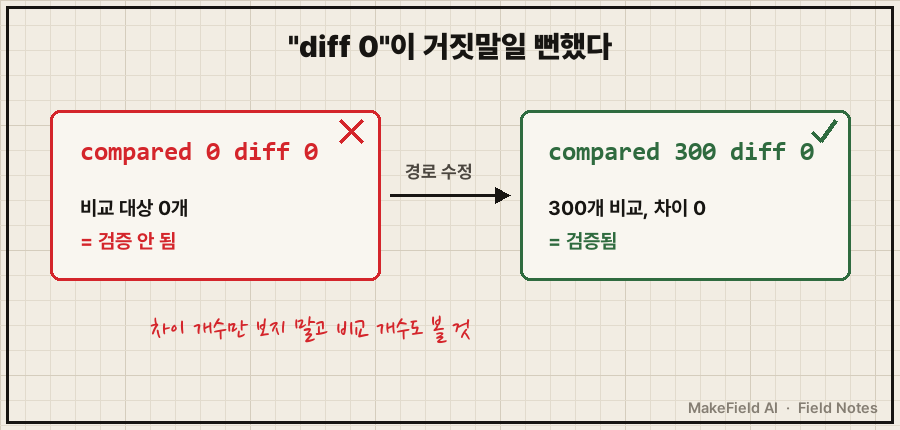

AI가 보낸 작업 보고서 앞머리에 이런 문단이 있었어요.
먼저 사고 하나를 알립니다.
상위 작업이 먼저 만들어 둔 _scripts/text_metrics.py를
제가 실수로 덮어썼습니다.백업도 없고, git도 안 걸어 둔 폴더였습니다.
그런데 이 파일은 살아났어요.
파이썬 파일 덮어썼을 때 복구할 길은 pycache 폴더에 남은 .pyc 파일입니다. .pyc 안에는 원본 코드를 컴파일한 바이트코드가 그대로 들어 있어서, 파이썬 표준 라이브러리(marshal·dis)만으로 함수 구조와 문자열·정규식·목록을 꺼내 원본을 다시 쓸 수 있어요. 이번엔 덮어쓴 순간부터 원본과 같은지 검증하기까지 90초 걸렸습니다.
저는 15년 동안 설비 제어 코드를 짜 온 엔지니어인데요, 퇴근 뒤엔 글을 쓰고 스스로 채점하는 AI 에이전트를 하나 키우고 있어요. 이번 사고는 그 에이전트를 세팅하던 밤에 났습니다.
1. AI 두 개가 같은 파일 이름을 썼어요
상황은 단순했어요.
메인 AI 작업이 글 품질을 재는 계측 스크립트 text_metrics.py를 먼저 만들어 뒀고,
채점 기준을 조사하는 일은 서브에이전트(메인 AI가 따로 띄운 보조 AI)에게 병렬로 맡겼습니다.
그런데 서브에이전트도 조사 결과를 코드로 옮기면서, 같은 폴더에 같은 이름으로 파일을 새로 썼어요.
10,394바이트짜리 새 파일이 원본 위에 그대로 덮였습니다.

흥미로운 건 발견 속도예요.
덮어쓰고 4초 뒤, 서브에이전트가 폴더 목록을 다시 찍어 봤어요.
그리고 10초 뒤엔 옆의 pycache 폴더를 열었습니다. 그 안에 7,016바이트짜리 text_metrics.cpython-312.pyc가 남아 있었거든요.
만들어진 시각은 덮어쓰기 2분 37초 전. 덮어쓰기 전 원본이 남긴 흔적이었던 거죠.
2. .pyc에서 원본을 꺼낸 순서
.pyc는 파이썬이 모듈을 불러올(import) 때 만들어 두는 컴파일 결과입니다. 사람이 읽는 코드는 아니지만, 함수 이름·변수 이름·문자열·숫자·정규식은 다 들어 있어요. 서브에이전트가 실제로 돌린 순서는 이랬습니다.
- .pyc 앞의 헤더 16바이트(파이썬 3.7부터 이 길이, PEP 552)를 건너뛰고
marshal.loads로 코드 객체를 읽는다 - 함수 구조부터 확인한다 →
strip_md,sentences,metrics세 함수와 내부 반복문 4개 dis.dis로 전체를 풀어 쓴다 → 698줄짜리 바이트코드 목록- 그 목록을 보면서 파이썬 코드를 다시 쓴다
실제로 쓴 명령은 이 두 줄이 핵심이에요.
import marshal, dis
b = open('text_metrics.cpython-312.pyc', 'rb').read()
co = marshal.loads(b[16:]) # 헤더 16바이트 건너뛰기
dis.dis(co) # 바이트코드를 사람이 읽을 목록으로별도 디컴파일 도구는 설치하지 않았어요. 표준 라이브러리만 썼습니다.
698줄 목록을 읽고 원본을 다시 써내는 데 40초 남짓 걸렸고요.
다시 쓴 파일 맨 위엔 이런 주석이 붙었습니다. "바이트코드에서 그대로 복원했다(키·정규식·사전 동일)".

3. "diff 0"이 거짓말일 뻔했어요
여기서 끝났으면 저는 이 글을 안 썼을 거예요.
복원한 코드가 진짜 원본과 같은지 확인하려고, 서브에이전트는 원본 .pyc를 모듈로 직접 불러와 새 파일과 나란히 돌렸어요. 마크다운 글 300개를 양쪽에 넣고 결과가 하나라도 다르면 표시하는 방식이었죠. 첫 결과가 이랬습니다.
compared 0 diff 0다른 게 0건. 언뜻 보면 합격이에요.
그런데 앞 숫자가 0입니다. 비교한 파일 자체가 0개였어요. 글 폴더 경로를 옛 이름으로 적어서 파일을 하나도 못 찾은 거였죠.
경로를 고쳐서 다시 돌리자 이렇게 나왔습니다.
compared 300 diff 0이번엔 300개를 실제로 비교하고 다른 게 0건. 마지막에 한 번 더 돌려서 같은 결과를 확인하고 나서야 보고서를 썼어요.

0건 비교의 "차이 0"은 성공이 아니라 아무것도 안 한 것이에요. 검증 스크립트를 짤 땐 차이 개수만 보지 말고, 비교한 개수가 기대한 숫자인지 같이 찍어 두세요.
4. 복구 방법 비교, 그리고 .pyc가 사라지는 조건
파이썬 파일 덮어썼을 때 복구 수단을 정리하면 이렇습니다.
| 수단 | 살릴 수 있는 것 | 이번 상황 |
|---|---|---|
| git 이력 | 커밋 시점 원본 전체(주석 포함) | 안 걸어 둠 |
| 백업 폴더 | 백업 시점 원본 | 없음 |
pycache .pyc | 마지막으로 import한 시점의 로직(주석 제외) | 남아 있어서 이걸로 복구 |
.pyc 복구에는 조건이 하나 붙어요. 오늘(10월 30일) 같은 파이썬 3.12로 직접 재현해 봤습니다.
- 덮어쓴 파일을
python 파일.py로 실행만 하면 .pyc는 그대로였어요 - 덮어쓴 파일을 import하자 .pyc가 새 내용으로 바로 바뀌었습니다(414바이트 → 165바이트)
그러니까 덮어쓴 걸 알아챈 순간, 그 파일을 불러오는 다른 스크립트를 돌리기 전에 .pyc부터 다른 폴더로 복사해 두는 게 첫 동작이에요. 이번엔 검증 단계에서야 복사했는데, 운이 좋았던 셈입니다..
그리고 .pyc에는 주석이 안 남습니다. 로직은 돌아와도 "왜 이렇게 짰는지" 메모는 같이 사라져요.
5. 자주 묻는 질문
Q. 파이썬 버전이 다르면 .pyc를 못 읽나요?
.pyc 파일 이름에 만든 버전이 붙어 있어요(cpython-312 = 3.12). marshal 형식은 버전마다 달라질 수 있어서, 같은 버전 파이썬으로 여는 게 안전합니다.
Q. .pyc가 아예 없으면요?
그 파일을 한 번도 import한 적이 없다는 뜻이라 이 방법은 못 써요. 이번에 캐시가 있었던 것도 원본이 한 번 불려(import) 쓰인 적이 있어서로 보여요. 남은 길은 git·백업·에디터의 로컬 기록 정도예요.
Q. AI 에이전트를 병렬로 돌릴 때 이걸 어떻게 막나요?
맡길 때 "이 폴더의 이 파일은 손대지 말 것, 새 파일은 이 이름으로"를 지시에 적는 게 제일 싸요. 그리고 AI가 실수를 숨기지 말고 보고서 첫 줄에 쓰게 하는 것. 이번에 파일이 산 건 복구 기술보다, 사고를 보고서 앞머리에 적은 그 습관 덕이 컸어요. 숨겼으면 다음 날 채점이 조용히 다른 숫자를 냈을 테니까요.
6. 정리하면
덮어쓰기 자체는 막을 수 있는 실수였고, 복구는 운과 습관이 반반이었습니다.
캐시 폴더에 원본이 남아 있었던 건 운이고, "비교 0개"를 그냥 넘기지 않은 건 습관이에요.
체크리스트로 줄이면 세 줄입니다.
- [ ] 덮어쓴 걸 알면 import 전에
pycache의 .pyc부터 복사 - [ ]
marshal.loads(b[16:])→dis.dis로 구조를 보고 재작성 - [ ] 원본 .pyc와 새 파일을 나란히 돌려 "비교 개수"와 "차이 개수"를 둘 다 확인
여러분 작업 폴더의 pycache, 지워도 되는 찌꺼기로만 보고 계셨나요? 저는 이날 이후로 그 폴더를 함부로 안 지웁니다.
AI 도구로 일하다 막혔다가 빠져나온 기록은 makefield.ai에 같이 정리해 두었습니다.
태그: #파이썬파일덮어썼을때복구 #pyc복구 #pycache복구 #파이썬원본복원 #파이썬바이트코드 #marshal #dis모듈 #파이썬실수복구 #AI서브에이전트 #클로드코드서브에이전트 #AI에이전트병렬작업 #파일덮어쓰기 #ClaudeCode #막힐때해결 #MakeFieldAI